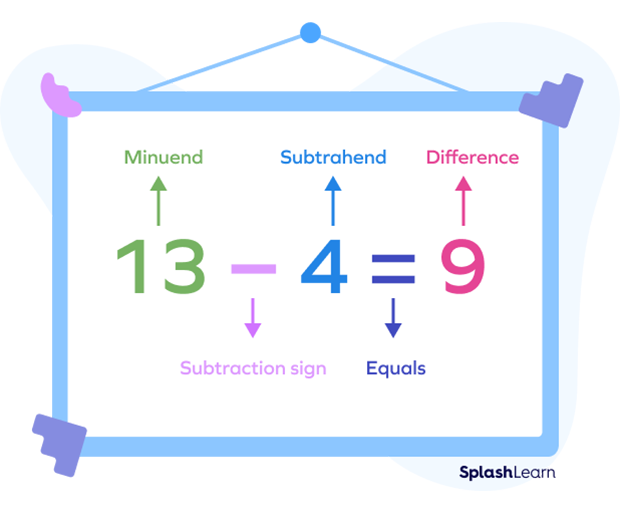

What is Subtraction?
Sutraction is the operation of you finding how many you have left when you have two different qauntities. Most common way we use this operation is when paying for groceries and other expenses.

-
' - ' is the sign of subtracting, known as minus, the arithmetic operation of subtraction between two numbers. When subtracting, it is always and should be written in a subtraction sentence.

Subtraction Sentence
The operation of subtracting is subtraction, but thers is more to it. Three terms that are always present.
Minuend is the number from which the other number is subtracted. While subtrahend is the number which is to be subtracted from the minuend. Difference is the final result after the subtracting.
